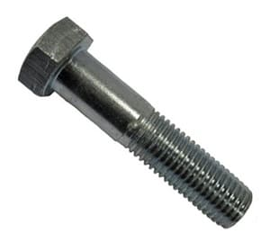

ГОСТ 7798-70 Болт с шестигранной головкой
Стандарт
DIN 186
ГОСТ
ГОСТ 7798-70
ISO
ISO 4014
Цена от
92,00 ₽
Размерный ряд
купить в СПб
Болты » Болты с шестигранной головкой ГОСТ 7798-70, размеры резьбы от М6 до М48
Варианты и размеры (15)
| Наименование | Размер | Длина, мм | Материал | Покрытие | Цена |
|---|---|---|---|---|---|
| ГОСТ 7798-70 Болт с шестигранной головкой M10 L=5мм | M10 | 5 | 112,00 ₽ | ||
| ГОСТ 7798-70 Болт с шестигранной головкой M12 L=75мм | M12 | 75 | 271,00 ₽ | ||
| ГОСТ 7798-70 Болт с шестигранной головкой M14 L=2мм | M14 | 2 | 133,00 ₽ | ||
| ГОСТ 7798-70 Болт с шестигранной головкой M16 L=2мм | M16 | 2 | 147,00 ₽ | ||
| ГОСТ 7798-70 Болт с шестигранной головкой M18 L=2мм | M18 | 2 | 160,00 ₽ | ||
| ГОСТ 7798-70 Болт с шестигранной головкой M20 L=2мм | M20 | 2 | 173,00 ₽ | ||
| ГОСТ 7798-70 Болт с шестигранной головкой M22 L=2мм | M22 | 2 | 187,00 ₽ | ||
| ГОСТ 7798-70 Болт с шестигранной головкой M24 L=3мм | M24 | 3 | 204,00 ₽ | ||
| ГОСТ 7798-70 Болт с шестигранной головкой M27 L=3мм | M27 | 3 | 224,00 ₽ | ||
| ГОСТ 7798-70 Болт с шестигранной головкой M30 L=3мм | M30 | 3 | 244,00 ₽ | ||
| ГОСТ 7798-70 Болт с шестигранной головкой M36 L=4мм | M36 | 4 | 290,00 ₽ | ||
| ГОСТ 7798-70 Болт с шестигранной головкой M42 L=4мм | M42 | 4 | 331,00 ₽ | ||
| ГОСТ 7798-70 Болт с шестигранной головкой M48 L=5мм | M48 | 5 | 379,00 ₽ | ||
| ГОСТ 7798-70 Болт с шестигранной головкой M6 L=4мм | M6 | 4 | 82,80 ₽ | ||
| ГОСТ 7798-70 Болт с шестигранной головкой M8 L=25мм | M8 | 25 | 130,00 ₽ |